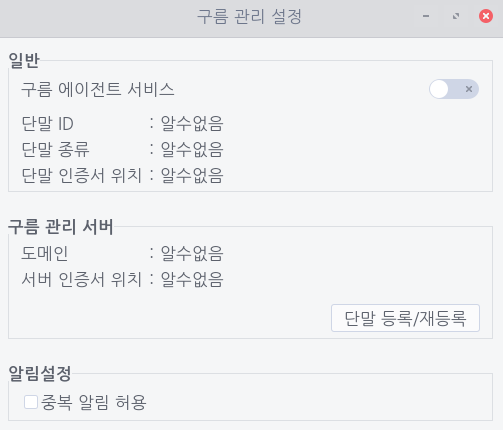
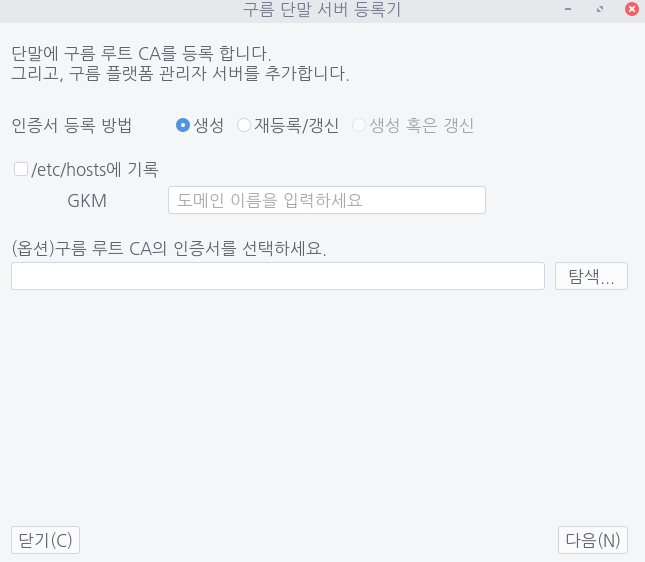
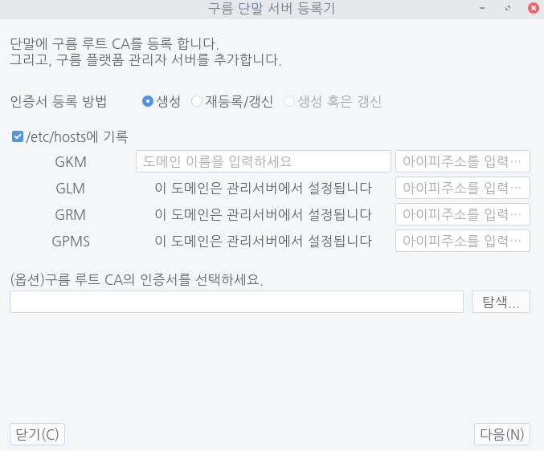
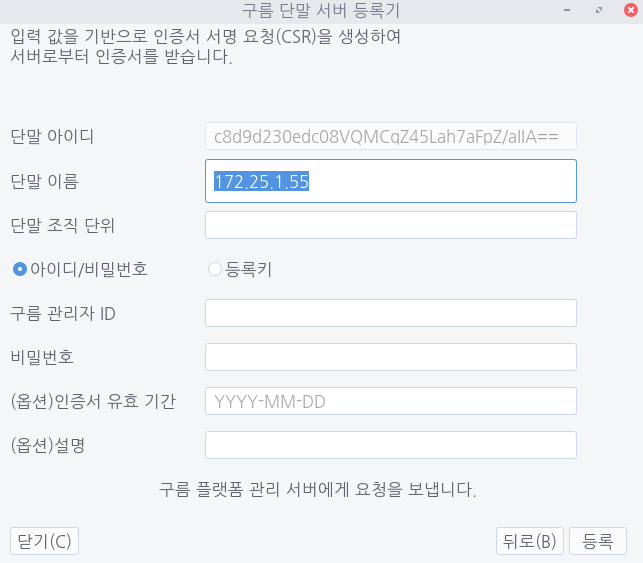
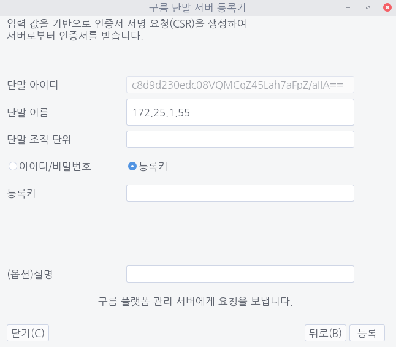
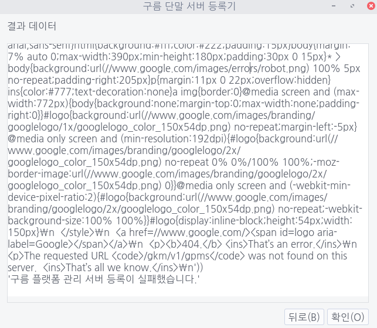

다음 각 절차에 따라 단말을 등록합니다.
구름 단말 서버 등록기 열기
1. 구름 통합 애플릿을 통해 [보안 상태]를 클릭한 다음 [구름 관리 설정]을 선택합니다.


2. [구름 관리 설정] 대화 상자에서 [단말 등록/재등록]을 클릭하여 단말 등록기를 실행한 다음 관리자 암호를 입력하여 인증합니다.
첫 번째 페이지
1. [인증서 등록 방법]에서 필요에 따라 항목을 선택합니다.
- 처음 등록: [생성] 선택
- 갱신: [재등록/갱신] 선택
2. DNS에 등록되어 있는 GKM 주소일 경우 도메인 이름을 바로 입력합니다.
이외 경우에는 [/etc/hosts에 기록] 확인란을 클릭하여 도메인 이름과 ip주소를 입력합니다(오른쪽 이미지).
3. 구름 루트 CA 인증서가 있다면 이를 미리 등록할 수 있습니다.
[탐색...]을 클릭하여 루트 CA 인증서 위치를 선택한 다음 [다음] 버튼을 클릭합니다.


두 번째 페이지


- 단말 아이디: 단말의 고유 ID입니다. 이 항목은 자동으로 설정되며, mac 주소와 하드웨어 SN 등을 조합하여 base64로 인코딩합니다.
- 단말 이름(선택 사항): 기본적으로 단말 IP를 입력하며, 필요에 따라 원하는 이름을 지정할 수도 있습니다.
- 단말 조직 단위(선택 사항): 단말 조직 단위를 지정할 수 있습니다.
- [아이디/비밀번호] 및 [등록키]: 단말 등록 인증 방식을 선택합니다.
- 구름 관리자 ID: 구름 GPMS 관리자 ID를 입력합니다.
- 비밀번호: 입력한 ID에 대한 비밀번호를 입력합니다.
- 인증서 유효 기간(선택 사항): GKM 서버 인증서의 유효 기간을 설정합니다.
- 설명(선택 사항): 단말에 대한 설명을 추가할 수 있습니다.
- 등록키: [등록키]를 단말 등록 인증 방식으로 선택한 경우 GPMS에서 발급받은 등록키를 입력해야 합니다.
인증을 위해 필수로 입력해야 하는 [아이디/비밀번호] 또는 [등록키]를 입력했다면 [등록]을 눌러 다음 페이지로 이동합니다.
세 번째 페이지
여기에서 단말이 서버에 정상적으로 등록되었는지 확인할 수 있습니다. 등록에 실패한 경우 관련 로그를 확인할 수 있습니다.
실패한 경우 [뒤로]를 눌러 관련 정보를 수정합니다.
성공한 경우 [확인]을 눌러 등록 절차를 마칩니다.
